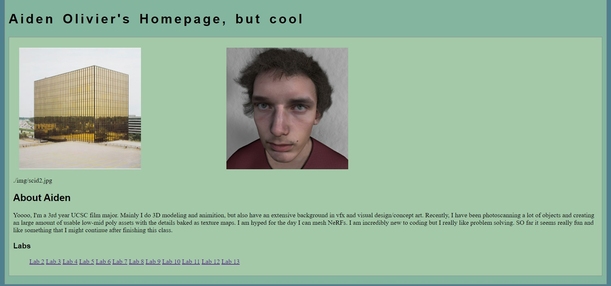
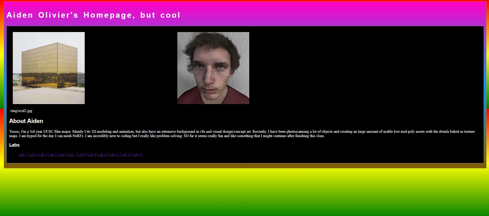
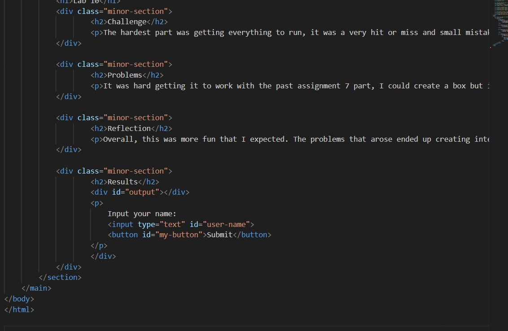
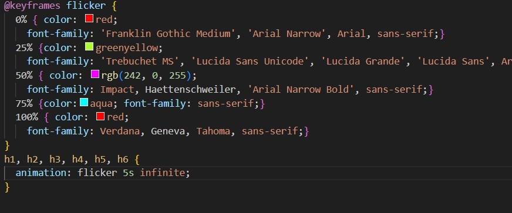

Lab 14 - Fixing old
Challenge
Redoing old projects.
Problems
Most of my old labs worked because I got them working, but wasn't happy how they looked. I made them look nicer
Reflection
Put your reflections about this assignment here. How did it go? What kind of energy did you put into the assignment?

Before css overhaul

After css overhaul

Lab 10 css fixes

Before the css changes, it flickered too fast so I made the fonts more similar and a slower flicker